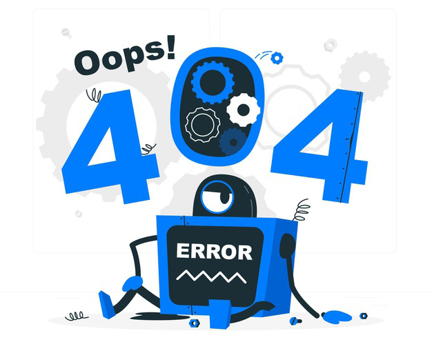

تازهترین آهنگها
مشاهده بیشترخوانندهها
همهٔ خوانندههاصفحۀ نوشته تکی — همان بلوکهای single.php
کاور، پلیر، شناسنامۀ آهنگ (چیپها)، باکس اجتماعی و لینکهای دانلود. اولویت: وضوح اطلاعات و دسترسی سریع.
دانلود آهنگ بوسه آخر از روزبه بمانی
Previous
Next
روزبه بمانی - بوسه آخر
03:42 / 00:00
شناسنامۀ آهنگ
دانلود آهنگ بوسه آخر
متن آهنگ بوسه آخر از روزبه بمانی
بوسهات هنوز روی این لب است
شب، نیمهتمام و بیپاسخ…
هر جا که رفتم عطر تو هست
این دیوارها هم یاد تو هستند
ترانهای از روزبه بمانی با تنظیم سعید زمانی و میکس میلاد ملیحی؛ mastered برای پخش آنلاین با کیفیت ۱۲۸ و ۳۲۰.
- کیفیت ۱۲۸ (حجم کمتر)
- کیفیت ۳۲۰ (پیشنهادی)
- متن ترانه در ادامهٔ همین صفحه
اگر خطی از ترانه را دوست دارید، همینجا نقل میشود — کنتراست و ارتفاع خط فارسی در این بلوک تست میشود.
دیدگاهها — همان نشانهگذاری comments.php
قاعدۀ قدیمی قالب برای هر دیدگاه «پسزمینۀ ۲۰٪ سفید روی صفحۀ سفید + حاشیۀ خاکستریِ خشن + نامِ سبزِ کاربر» بود؛ حالا کارتِ روشن با مرز نازک، آواتار دایرهای، تورفتگیِ راستبهچپ برای پاسخها و فرم در یک ظرف.
۲ دیدگاه
دیدگاه خود را بنویسید
صفحۀ ۴۰۴ — نشانهگذاری جدید 404.php
HTTP همچنان ۴۰۴ واقعی است؛ جستوجوی واقعی، بازگشت به صفحه اصلی، میانبُرهای مفید و شش آینۀ تازه از دادهٔ واقعی.
این صفحه پیدا نشد (۴۰۴)
ممکن است آهنگ حذف شده باشد، نشانی را اشتباه تایپ کرده باشید، یا لینک از جای دیگری شکسته باشد. نام آهنگ یا خواننده را جستوجو کنید — یا از فهرستِ زیر استفاده کنید.

۶) صفحۀ دسته/بایگانی — v3.3.5 عنوان بلند باید بشکند و «کادر سفیدِ بیتوضیح» نباید باشد
آهنگ جدید، بهترین آهنگهای فارسی ماه و مجموعهای از موزیکهای بیکلام و ریمیکس
مشاهده همه
بالا: اگر category_description() خالی باشد، <div class="archive_txt_box"> یا چاپ نمیشود (گارد PHP) و در صورت چاپ شدن هم کادر/مرز ندارد (گارد CSS :has()) ⇒ آن «کادر خالی سفید» زیر عنوان از بین میرود. عنوان بلند هم بهجای «آهنگ ج…» تا دو خط میشکند.
چیزی که اینجا میبینید = نشانهگذاری واقعیِ
دکمۀ «لایۀ شیشهای» دقیقاً همان کاری را میکند که
فلاش رفرش با دکمۀ «فلاشِ پیش از init» قابل دیدن است: تا لحظۀ اضافهشدن کلاس
بخش هنرمندان به حالت قبل برگشت: هر قاعدۀ من روی owl-item و سایز آیتمها حذف شد و owl خودش تعداد/ظاهر را تعیین میکند. برای ریلهای موبایل پنجره را زیر ۷۶۸px بیاورید: خوانندهها و آهنگهای صفحۀ اصلی اسلایدرِ لمسی (scroll-snap) میشوند و فهرستهای بلند (صفحۀ خواننده، جستوجو) دو ستون فشرده.
کشوی منو بالا-راست همین صفحه با همان CSS واقعی باز میشود؛ در 3.3.2 backdrop-filterِ هدر، فرزندِ
header.php / inc/songs_post.php / single.php / 404.php + CSS واقعیِ همین نسخه (style.css بلوک ۲۶ و css/ab-glass.css).دکمۀ «لایۀ شیشهای» دقیقاً همان کاری را میکند که
define('JAVANSEDA_GLASS_UI', false) روی هاست میکند: فایل خاموش میشود و ساختار/تراز دستنخورده میماند.فلاش رفرش با دکمۀ «فلاشِ پیش از init» قابل دیدن است: تا لحظۀ اضافهشدن کلاس
owl-loaded فقط آیند اول چیده میشود (بلوک ۲۸) — همان چیزی که بعد از init هم دیده میشود، پس پرش ارتفاع نداریم و JS تازهای لازم نیست.بخش هنرمندان به حالت قبل برگشت: هر قاعدۀ من روی owl-item و سایز آیتمها حذف شد و owl خودش تعداد/ظاهر را تعیین میکند. برای ریلهای موبایل پنجره را زیر ۷۶۸px بیاورید: خوانندهها و آهنگهای صفحۀ اصلی اسلایدرِ لمسی (scroll-snap) میشوند و فهرستهای بلند (صفحۀ خواننده، جستوجو) دو ستون فشرده.
کشوی منو بالا-راست همین صفحه با همان CSS واقعی باز میشود؛ در 3.3.2 backdrop-filterِ هدر، فرزندِ
position:fixed را داخل جعبۀ ۶۵px هدر گیر میانداخت (علت «منو کلا رفته»).
پنجره را بکشید (یا دکمۀ «عرض باریک») تا ببینید ظرف از ۱۳۰۰pxِ پلهای به max-width + gutter پیوسته رسیده: ستونها با auto-fill کم/زیاد میشوند و هیچ برشِ یکطرفهای نیست.
ترانۀ خیلی خوبی بود، کیفیت ۳۲۰ هم تمیز در اومد. ممنون از سایتتون 🙏
ممنون از لطفتون. اگر لینکی خراب بود همینجا گزارش بدید تا سریع درست میکنیم.